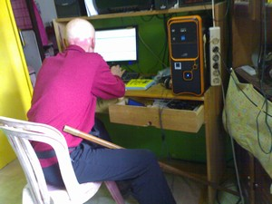

Navigation
 ČESKÁ verze
ČESKÁ verze- The best of New Guinea
- PNG & West Papua
- Today cannibals
- First Contact expedition
- Tribe Expedition
- ITINERARIES AND SCHEDULE
- Carstensz Pyramid - Top of Papua
- Korowai & Kombai tribe – Papua Tree people tribes
- Korowai Batu & Kopkaga - tree people
- Asmat tribe – the Papuan cannibals
- Yali tribe
- Mamberamo river of West Papua
- Dani tribe in Baliem Valley
- Lani tribe in Baliem Valley
- Wamena as a first contact place on West Papua highlands
- Papua New Guinea
- Goroka Show & Mt. Hagen Show
- Asaro Mudman
- Huli tribe – the wig-men
- Why to go with us
- The films from our expeditions
- More photos
- References
- Papua Postcards
- Links
- Contact us
- Download
Papua Internet
On Papua, it still very difficult to find a place with Internet access available to travelers. Here you will find information on places with Internet connection on Papua. We hope to help you to stay in touch with home.
Papua Indonesia (Irian Jaya)
Jayapura
Warnet Kopegtel (Telkom)
Jl. Koti no. 1
Media Papua Internet
Jl. Percetakan
Warner Cnedrawasih PLN
jln. A.YANI no.18, Jayapura, Papua
Sentani
Duta Computer
Jl. Kemiri
Wamena
Papua Com
Jl. A – Yani no. 49
Nabire
The only Internet cafe in Nabire is situated opposite PERTAMINA fuel station
Biak – Papua Indonesia
Dibiakcom
Jl. Jendral Sudirman No.4 – Biak 98112 – Papua – Indonesia
Timika
SH.SANTOSO-ORIENTAL RESTOURANT, Jln.(Street)Cenderawasih,–SEBELAH GANG KOMODO TIMIKA-PAPUA TELP. +6285227682872 HP: +6285244919262; facebook:shann santoso-

Jakarta
If you come to Papua Indonesia, you are almost bound to visit Jakarta.
Internet in Jakarta on Jalan Jaksa and their vicinity
Amanda Bali International Top Internet Cafe
JL.KH.Wahid Hasyim NO.110 Jakarta-Pusat
Virtualnet
Jl. Jaksa 33 Mnteng Jakarta Pusat
mnet
Jl.Jaksa no.41a Rt.05 Rw.07 Kel.Kebon Sirih Kec.Menteng Pakarta Pusat
cipta net
MEDIA OF TOURIS'M Jl. Jaksa no.27 Kel.Kebon Sirih Kec.Menteng Pakarta Pusat
Jakarta 10340
Papua New Guinea
Goroka
The only Internet cafe there is located in the shopping centre near the airport. It is on the second floor of the building.
Mount Hagen
The only Internet cafe is in the centre of the town.
Port Moresby
Although Port Moresby is a capital of Papua New Guinea, there are only several places, where you can access the Internet. You have to ask the local people to tell you the directions.
Vanimo
No Internet there. Although the immigration office has the Internet access, it is not available to general public. Vanimo beach hotel claims to have Internet access, but according to our (repeated) experience, it does not work…